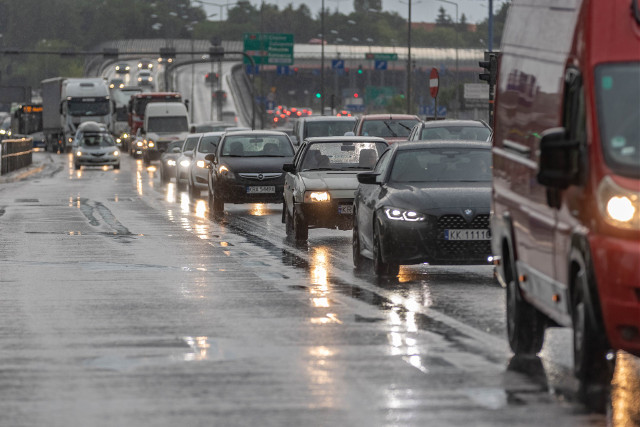

Urzędnicy tłumaczą przestój niespodziewanym odkryciem starych rur gazowych pod warstwą asfaltu. Kierowcy muszą przygotować się na ogromne korki i uciążliwe objazdy przez co najmniej kolejne trzy tygodnie.
To miała być szybka modernizacja polegająca na wymianie nawierzchni i poprawie sygnalizacji świetlnej przed rozpoczęciem sezonu letniego. Niestety, drogowcy wbijając pierwszą łopatę natrafili na instalację gazową, której nie było na żadnych miejskich planach architektonicznych.

Dla kierowców i właścicieli okolicznych biznesów to marne pocieszenie. Lokalne sklepy i kawiarnie odnotowują ogromne spadki obrotów ze względu na brak dojazdu. Zorganizowano tymczasowe objazdy wąskimi, osiedlowymi uliczkami, co doprowadza z kolei do szału mieszkańców sąsiednich blokowisk. Urzędnicy apelują o cierpliwość i proszą o omijanie centrum szerokim łukiem do końca przyszłego miesiąca.